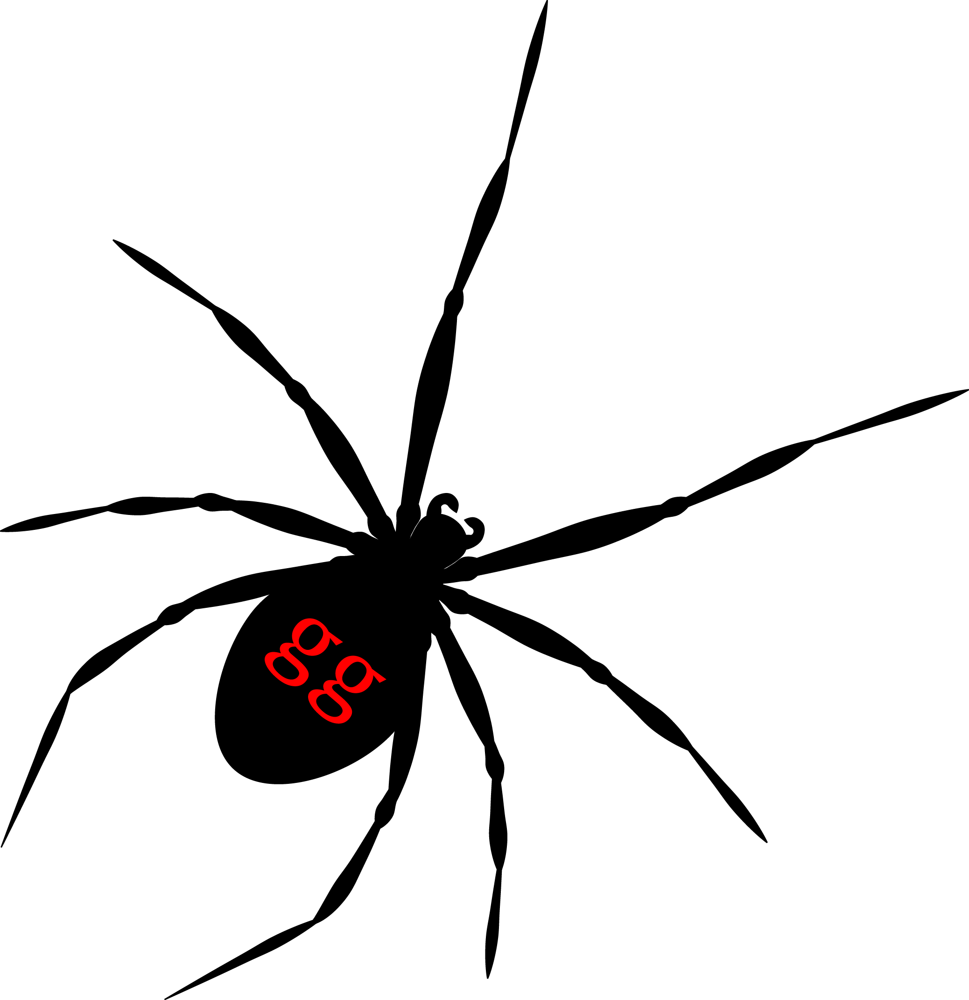

tanggle provides function to plot phylogenetic networks of class evonet from ape and split graphs of class networx from phangorn.
You can install remotes::install_github("KlausVigo/tanggle")
To install tanggle you may need to install the ggtree package from bioconductor first:
if (!requireNamespace("BiocManager", quietly = TRUE))
install.packages("BiocManager")
BiocManager::install("ggtree")You also need to install ggplot and phangorn. If you are unsure if you have installed these packages, you can quickly run the code below:
packages_needed <- c("ggplot2", "phangorn")
packages_to_install <- packages_needed[!(packages_needed %in% installed.packages()[,"Package"])]
if(length(packages_to_install)) install.packages(packages_to_install)If you use tanggle please cite:
Paradis E. & Schliep K. 2018. ape 5.0: an environment for modern phylogenetics and evolutionary analyses in R. Bioinformatics 35: 526-528.
Schliep K.P. 2011. phangorn: phylogenetic analysis in R. Bioinformatics, 27(4) 592-593
Schliep, K., Potts, A. J., Morrison, D. A. and Grimm, G. W. (2017), Intertwining phylogenetic trees and networks. Methods Ecol Evol. 8, 1212–1220.
and also
Guangchuang Yu, David Smith, Huachen Zhu, Yi Guan, Tommy Tsan-Yuk Lam. ggtree: an R package for visualization and annotation of phylogenetic trees with their covariates and other associated data. Methods in Ecology and Evolution 2017, 8(1):28-36
